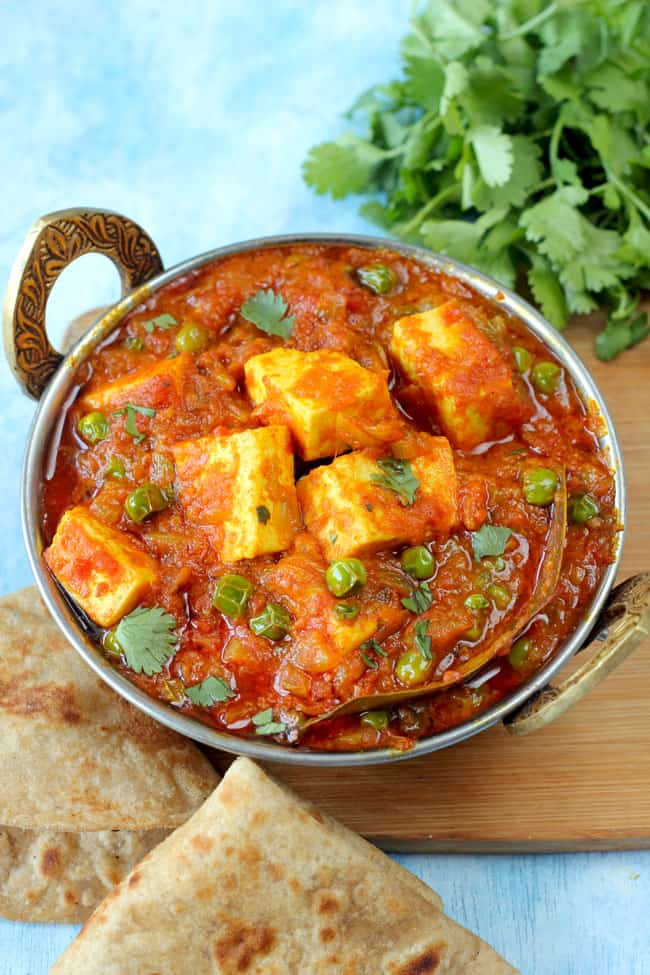

Matar Paneer

Matar paneer recipe is a popular Indian Curry dish made with green peas and Paneer (Indian cottage cheese) in a base of onions, tomatoes, cashews, spices and herbs.
The recipe hails from the versatile Northern Indian cuisine that has many different (and delicious) variations.
I am sharing our family recipe of a flavorful and simple home-style mutter paneer that you are going to like.
Ingredients
- Paneer (Indian cottage cheese)
- Green Peas (matar)
- Tomatoes
- Onion
- Green Chilies
- Cashews
- Cumin Seeds
- Turmeric powder
- Red chili powder
- Garam masala powder
- Salt
- Ginger
- Garlic
- Coriander leaves and seeds
- Black peppercorns
- Cardamom
- Cloves
- Cinnamon
Making Masala Paste
1. First, you will take all of the masala paste ingredients and add them to a grinder or a blender. Make sure you include:
- ½ cup chopped onions
- ¾ to 1 cup chopped tomatoes
- 1 teaspoon chopped ginger sub with ¼ teaspoon of ground ginger (dry ginger powder)
- 1 teaspoon chopped garlic
- 10 to 12 cashews
- 2 tablespoons coriander leaves (cilantro)
- 1 teaspoon chopped green chilies or serrano peppers
- 4 to 5 black peppercorns
- 1 inch cinnamon (Use true cinnamon. For cassia cinnamon, use ½ inch of it)
- 1 teaspoon of coriander seeds {sub with 1 teaspoon of ground coriander (coriander powder)}
- 1 green cardamom (optional)
- 2 cloves
- 2. After that, you will grind the ingredients into a smooth paste. If needed add 2 to 3 tablespoons of water while grinding the masala paste. When the paste is creamy and blended to a fine consistency, set aside until later.
Note:There should be no small bits or pieces of cashews in the paste.
Make Mutter Paneer
- 3. Next add 3 tablespoons oil in a 2-litre pressure cooker or a pot. Let the oil become hot. Reduce heat to a medium-low heat. Add ½ teaspoon cumin seeds and fry until they splutter.
- 4. Next, add in your ground masala paste, and mix well.
Tip: It is important to be careful while sautéing because the masala paste tends to splutter when added to the pressure cooker. If there is too much spluttering, then cover the cooker partly with a lid until the spluttering stops.
- 5. Now you will sauté the paste mixture for about 10 to 12 minutes on a medium-low heat.
- You want to be sure to sauté long enough for the oil to separate from the paste. The masala paste will also thicken and look glossy.
- After sautéing the masala paste, add in all of the dry spice powders, stir to combine well and sauté for a minute. Be sure to include:
- ¼ teaspoon turmeric powder
- ½ teaspoon kashmiri red chili powder or sweet paprika (sub with ¼ to ½ teaspoon of cayenne or red chilli powder)
- ¼ to ½ teaspoon garam masala powder (replace with ¼ teaspoon of curry powder)
Note: If adding heavy or light cream or clotted cream (malai), you can add now. Add 1 tablespoon of heavy cream or malai (the cream that floats on top of heated and cooled milk) or 2 tablespoons of light cream. In place of cream, substitute with ¼ cup whole milk.
- Next, add in 1 cup of rinsed green peas or matar. You can chose to add either frozen or fresh green peas.
- Mix again well.
- Then, add 1 to 1.25 cups water, salt and mix thoroughly.
If you have used a pot or pan for sautéing the masala, add about 1.5 to 2 cups water or as needed. Cover pan with its lid. Simmer on medium-low to medium heat until the peas have softened.
Do check a few times so that the gravy does not get burnt while cooking. If needed add some more water while the gravy is simmering and the peas are cooking.
- It’s now time to pressure cook the green peas until they are fully cooked. Be sure to cover the cooker tightly, then cook for about 9 to 10 minutes or 2 to 3 whistles on medium to medium-high heat.
Note: When the pressure drops on its own, open the lid of the pressure cooker. If the gravy appears thin, simmer until it reaches the desired consistency.
The consistency should be medium and neither thick nor thin. If the gravy appears thick, add some water and simmer.
For a slight sweet taste, you can also add up to ½ teaspoon of sugar at this point.
- Finally, add the paneer cubes and mix well or simmer on a low heat for a few seconds or until the paneer cubes are fully cooked. Don’t overcook as the paneer will become dense and hard.
You can add more flavors, by including ½ teaspoon of crushed kasuri methi (dried fenugreek leaves) at this step.
Note: You want to avoid overcooking, otherwise the paneer will become dense and rubbery. You can even shallow or pan fry the paneer pieces separately and then add these to the curry.
- Now that your matar paneer is ready to eat, garnish with chopped coriander leaves and serve hot or warm.